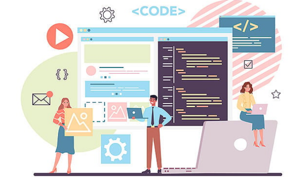
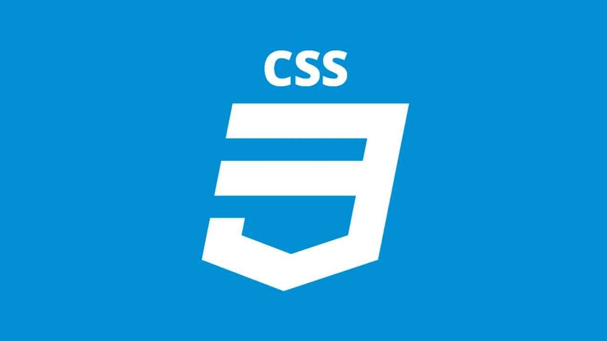
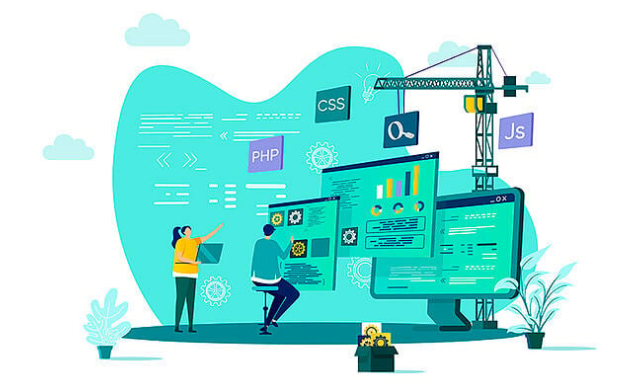
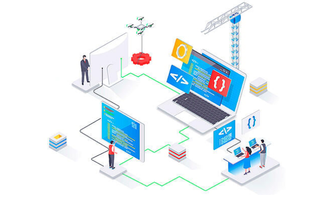

FRONTEND Y BACKEND
¿Qué es mejor Back-End o Front-End?

Ninguna es más importante que la otra, se complementan y necesitan mutuamente para funcionar, ya que por una parte, los sitios web deben ser bonitos y amigables y por la otra parte ese mismo sitio debe ser funcional y debe poder realizar operaciones.
En el front-end se necesitan personas con capacidad creativa y en el back-end se necesitan personas con muy buena lógica para resolver problemas.
¿Qué es frontend?
El frontend es la parte del desarrollo web que se dedica a la parte frontal de un sitio web, en pocas palabras del diseño de un sitio web, desde la estructura del sitio hasta los estilos como colores, fondos, tamaños hasta llegar a las animaciones y efectos.
Es esa parte de la página con la que interaccionan los usuarios de la misma, es todo el código que se ejecuta en el navegador de un usuario, al que se le denomina una aplicación cliente, es decir, todo lo que el visitante ve y experimenta de forma directa.
Un front-end, es la persona que se dedica básicamente al diseño web, pero esto no significa que no toque código, tanto el front-end como el back-end están en contacto con código todo el tiempo.
Dentro del área de front-end se trabaja con lenguajes mayormente del lado del cliente, como:
HTML

CSS
 Javascript
HTML y CSS son lenguajes de marcado y estilo. Javascript es un lenguaje de programación.
Javascript
HTML y CSS son lenguajes de marcado y estilo. Javascript es un lenguaje de programación.

¿Qué es backend?
Mientras que el frontend es la capa de programación ejecutada en el navegador del usuario, el backend procesa la información que alimentará el frontend de datos.
Es la capa de acceso a los datos, ya sea de un software o de un dispositivo en general, es la lógica tecnológica que hace que una página web funcione, lo que queda oculto a ojos del visitante.
El backend de una solución, determina qué tan bien se ejecutará la aplicación y qué experiencia, positiva o negativa, obtendrá el usuario de su uso.
Trabajar en este apartado supone algo totalmente diferente al frontend, ya que exige el dominio de otros términos de programación, lenguajes que requieren una lógica, ya que esta área es también la encargada de optimizar recursos, de la seguridad de un sitio y otros factores.
El flujo de trabajo de un backend consiste en darle funciones a un sitio; mientras que el frontend hace un sitio estático, el backend después le da funciones y adapta el sistema programado a ese sitio web.
Otras funciones que se gestionan son:
Creación de funciones que simplifiquen el proceso de desarrollo.
Acciones de lógica.
Conexión con bases de datos.
Uso de librerías del servidor web (un ejemplo puede ser para implementar temas de caché).
Además, debe velar por la seguridad de los sitios web y optimizar al máximo los recursos para que las páginas sean ligeras.
Ventajas del frontend y el backend
1. Mayor escalabilidad
Se trata de un entorno mucho más escalable, al estar separado, es posible que una de las dos partes necesite más recursos en un algún momento, por lo que se hace más sencillo y eficaz dividir los recursos.
2. Distintos equipos de desarrollo
Al tener estas dos partes que se diferencian, puedes tener en tu equipos diversos perfiles dedicados únicamente a su parte del trabajo.
3. Ampliación de plataformas disponibles
La API de comunicación ya la tendrías desarrollada y quizás solamente requeriría de pequeños ajustes, además, en el proceso de desarrollo, la parte front de tu web existente, no se vería afectada en ningún momento.
4. Las migraciones y actualizaciones son más sencillas
Normalmente, cuando ya está desarrollado el backend, lo que más se suele cambiar es la parte frontend, por esa razón, si te piden actualizaciones de diseño en la web o cambio de alojamiento, es más fácil, ya que la parte de servidor siempre va a estar funcionando por muchas actualizaciones que se tengan en la parte visual.
